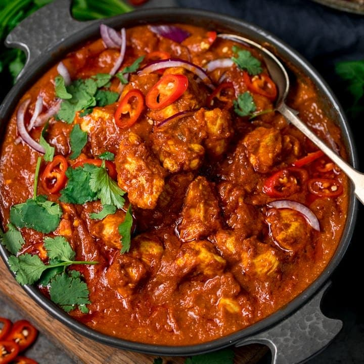

Chicken Madras

Description
This is the result of your hard work, a beautiful looking (and tasting) Chicken Madras
Ingredients
- 5 tablespoons cooking oil
- 3 whole cloves
- 2 cardamom pods
- 2 large onions, finely chopped
- 3 green chili peppers, with seeds, chopped
- 1 (1 inch) piece ginger, minced
- 4 cloves garlic, crushed
- 1 teaspoon ground red chili pepper, or to taste
- 1 teaspoon ground turmeric
- 1/2 teaspoon ground cumin
- 1/2 teaspoon ground coriander
- Salt to taste
- 1 1/2 pounds skinless, boneless chicken breasts, cut into bite-sized pieces
- 1/4 cup water
- 1/2 (4 ounce) can tomato puree
- 1 teaspoon ground nutmeg
- 1/2 cup chopped fresh cilantro, or more to taste
- 1 teaspoon garam masala
Steps
- Heat oil in a large nonstick pan over medium heat. Add cloves and cardamom pods and wait until they sizzle, about 1 minute. Add onions and fry until dark brown, 7 to 10 minutes. Add chile peppers, ginger, and garlic; cook until fragrant, about 30 seconds. Add ground chile pepper, turmeric, cumin, coriander, and salt. Cook, stirring frequently, until blended in, about 1 minute more
- Stir chicken and water into the pan with the spice mixture. Cook, while stirring, until water is incorporated, 2 to 3 minutes. Add tomato puree and nutmeg and cover the pan with a lid. Cook until chicken is tender over medium heat, about 20 minutes. When ready to serve, sprinkle with garam masala and cilantro